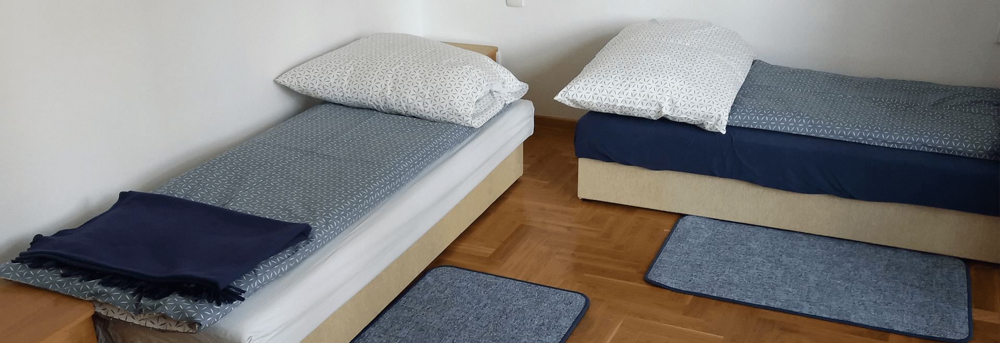

NALMED.
TERAPIA INNA NIŻ WSZYSTKIE.

- 
Nasza metoda „Nalmed” polega na skojarzeniu elementów tradycyjnej psychoterapii z niekonwencjonalną farmakoterapią, wykorzystującą preparaty już istniejące lub dopiero wprowadzane do lecznictwa, odpowiednio dawkowane. Ta zmodyfikowana, stosowana już przez nas terapia powoduje znaczne skrócenie jej formuły stacjonarnej, o wiele większą skuteczność, a także doskonałe efekty w formie ambulatoryjnej.
Prywatny ośrodek terapii Centrum Nalmed jako pierwszy w Polsce oferuje terapię uzależnień i zaburzeń metodą NALMED. Zgłaszając się do naszego Centrum znajdziesz odpowiedzi na wiele nurtujących Cię pytań i otrzymasz odpowiednią pomoc. Dlatego właśnie powstał nasz ośrodek - z myślą o Was i dla Was, Drodzy Pacjenci.
W naszym ośrodku pracują fachowcy o następujących specjalizacjach:
Od 30 lat pracuję w obszarach związanych z pomocą innym. Specjalizuję się w trudnych przypadkach. Prowadzę terapie uzależnień i uwikłań (od alkoholu, narkotyków, leków, pracoholizmu, hazardu, seksoholizmu), uzależnień mieszanych i krzyżowych, zaburzeń osobowości, podwójnej diagnozy, terapię PTSD – zespołu stresu pourazowego.
Jestem lekarzem z ponad 30-letnią praktyką i chociaż moja specjalizacja nie jest bezpośrednio związana z uzależnieniami, tematyka uzależnień od wielu lat jest mi bardzo bliska. Pracuję z pacjentami cierpiącymi z powodu uzależnienia od substancji, zaburzeń nastroju i odżywiania, jak również wielu innych chorób somatycznych.
Przyjechałem do Centrum NALMED i co mnie spotkało? Ciepłe przyjęcie i profesjonalizm, otrzymałem także fachową pomoc z rąk prawdziwych specjalistów do walki z uzależnieniami. Czego chcieć jeszcze?
Wszystkim, którzy chcą naprawdę przestać pić lub brać – polecam metodę Nalmed. Dzięki pomocy w ośrodku Nalmed przestałam się bać terapii, a zaczęłam wierzyć, że to może się udać. Dzięki terapeutom i rozmowom poczułam się bardziej wartościową osobą. Teraz jestem trzeźwa i wierzę, że będę!
Próbowałem już naprawdę wszystkiego. Pewnie dalej bym próbował – i pewnie bez skutku - gdybym nie trafił do Nalmedu. Centrum Nalmed to miejsce, które polecam każdemu. Profesjonalna kadra, dzięki której potrzebna wiedza sama wchodzi do głowy. Klimat domu a zarazem poczucie, że jesteś pod dobrą opieką terapeutyczną i lekarską. Dziękuję!
Doszłam do takiego etapu w życiu, że po prostu już miałam dość i picia i palenia. Chciałam przestać, ale nie potrafiłam. Dopiero w Nalmedzie dostałam prawdziwą i skuteczną pomoc, terapię i leki, które mi pomogły!
Wreszcie czuję, że żyję! Przez picie traciłem moje życie… wielu dni po prostu nie pamiętałem, wiele osób z którymi piłem było dla mnie ważniejszych od żony, dzieci, pracy, firmy. Dziękuję!